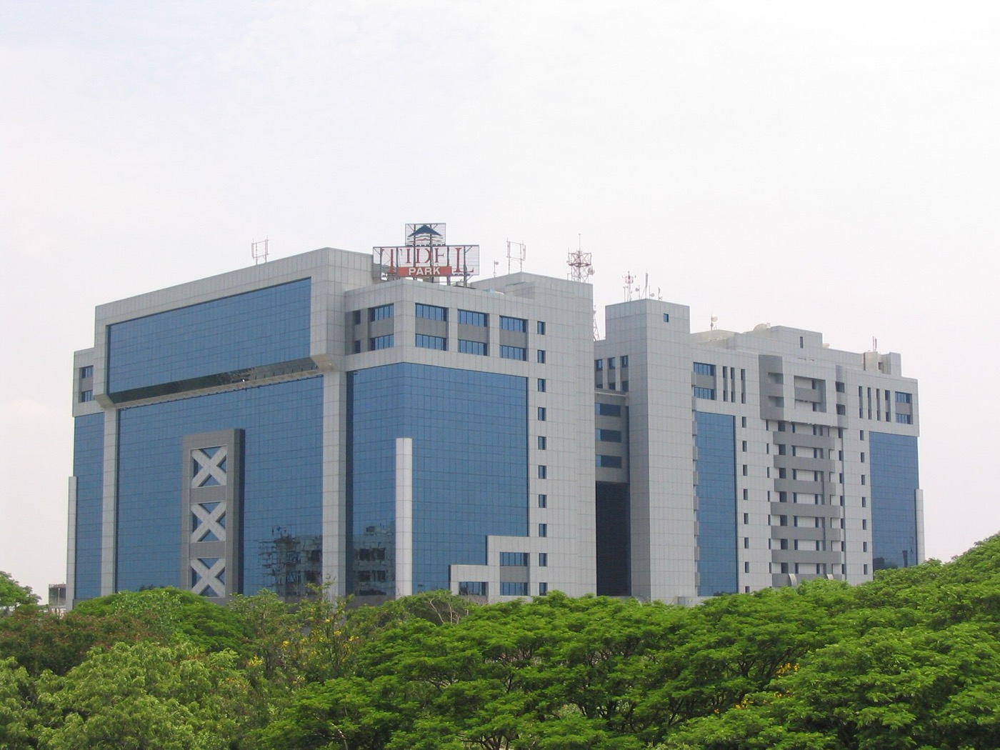
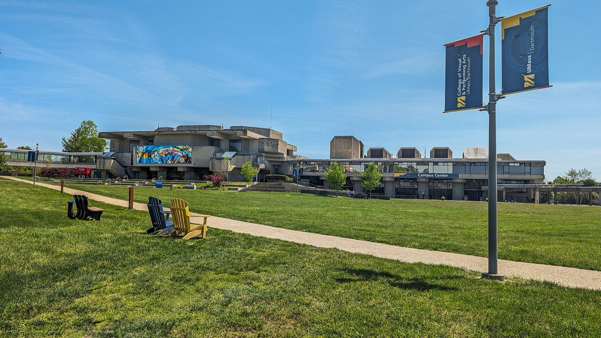

I'm Praveen. I build reliable pipelines for the World Bank's budget data.
Seven things I have built, from deep learning to data pipelines. Swipe or use the arrows.
1 / 7
-
Brain Tumor Detection Using Deep Learning
2025Deep learning
CNN-based classification system for brain tumor detection from MRI scans with 94.87% accuracy.
More about this project
Developed an MRI-based Convolutional Neural Network (CNN) classification system using EfficientNet and other pretrained models, achieving 94.87% accuracy in brain tumor detection. Deployed a Streamlit interface for live inference, enhancing clinical decision-making utility for healthcare professionals.
University of Massachusetts Dartmouth, Spring 2025. Built with Python, TensorFlow, Streamlit, Deep Learning, CNN.
-
DocViz – Interactive Document Clustering
2025NLP and visualization
Document analysis platform using TF-IDF, KMeans, and MDS visualized with D3.js.
More about this project
Built a document analysis platform that employs TF-IDF vectorization and KMeans clustering, with results visualized through Multidimensional Scaling (MDS) and D3.js. The system enables multi-document interaction, dynamic clustering, and visual insights through an intuitive browser-based user interface.
University of Massachusetts Dartmouth, Spring 2025. Built with Python, Node.js, D3.js, Machine Learning, NLP.
-
Career Centre Analytics Dashboard
2025Analytics dashboard
Dashboard combining Flask, D3.js, and Power BI to track UMass career center metrics.
More about this project
Created a comprehensive dashboard using Flask and D3.js to track key UMass career center performance metrics, with data stored in Azure Blob Storage. The system significantly improved internal reporting by automating metric updates from Excel sheets and providing interactive visualizations for stakeholder analysis.
University of Massachusetts Dartmouth, Spring 2025. Built with Flask, D3.js, Power BI, Azure, Python.
-
Flight Delay Analysis
2024Data pipeline
Data pipeline with Apache Airflow, Papermill, and Streamlit to analyze FAA flight delays.
More about this project
Built a comprehensive data pipeline using Apache Airflow, Papermill, and Streamlit to analyze FAA flight delay data. The system utilizes AWS S3 for scalable data storage and Docker for deployment orchestration, providing insights into delay patterns and operational efficiency across airlines and airports.
University of Massachusetts Dartmouth, Fall 2024. Built with Python, Apache Airflow, AWS S3, Streamlit, Docker.
-
SimuChat – AI Roleplay Game
2024LLM game · first place, Jia.Seed hackathon
Real-time AI roleplay game with 36 characters and 12 scenarios using Next.js and Shadcn.
More about this project
Developed an immersive real-time roleplay game featuring 36 AI characters across 12 engaging scenarios using Next.js and Shadcn. The project won first place for innovation in the Jia.Seed hackathon, generating over 15,000 interactions with 95% engagement accuracy across various user demographics.
Jia.Seed Hackathon, Fall 2024. Built with Next.js, Shadcn, AI/LLM, React, JavaScript.
-
Local Library Management System
2024Web application
Django-based library system with user authentication and permission-based lending.
More about this project
Designed a comprehensive Django-based library management system featuring user authentication, book browsing, and permission-based lending functionalities. The application was hosted on PythonAnywhere and supports database operations with SQLite and Ajax validation for improved user experience.
University of Massachusetts Dartmouth, Summer 2024. Built with Django, SQLite, Ajax, Python, HTML/CSS.
-
Bank Marketing Dataset Analysis
2024Predictive modelling
Predictive models and Streamlit dashboard for term deposit subscription prediction.
More about this project
Built sophisticated predictive models including Random Forest and XGBoost to classify term deposit subscriptions based on customer data. Created an interactive Streamlit dashboard for exploring factors influencing client behavior and generating actionable insights for marketing optimization.
University of Massachusetts Dartmouth, Spring 2024. Built with Python, Streamlit, XGBoost, Scikit-learn, Data Analysis.
About
I build the pipelines that move financial, budget and HR data out of SAP, REST APIs, SFTP drops and ODBC sources and into the World Bank's new Budget Planning Systems. Before that I migrated 4TB of production data at Infosys without losing a row, built AI automation agents at Goodie Bag, and finished an MS in Data Science at UMass Dartmouth with a 3.97 GPA.
- Based in
- Washington, DC
- Working since
- 2020
- Studied
- MS Data Science, 3.97 GPA
Record
- Infosys INSTA AwardSep 2023
- Infosys INSTA AwardDec 2022
- First place, Jia.Seed hackathonFall 2024
- Paper, Journal of Xidian UniversityAug 2020
- 4TB migrated with zero data lossInfosys
- Deploy time cut by 40% with CI/CDInfosys
- Design of Microstrip Fractal Antenna2020
Where I have worked
-
Now
-
Data Engineer · World Bank GroupFeb 2026 – now
Washington, DC
- Designed and built 20+ Azure Data Factory ETL/ELT pipelines and data flows integrating financial, budget, and HR data from ODBC sources, REST APIs, SFTP, and SAP (FI, CO, HR) into the World Bank's new Budget Planning Systems.
- Developed core pipelines and transformations for Budget, CapEx (assets, depreciation, cost share, fund movements, investments), Commitment Items, Fund Center Hierarchy, Exchange Rate, and consolidated FICO/RMRF (incl. secure variants), loading curated data into ADLS.
- Built and configured Jedox ETL integrators to connect planning and budgeting data flows between Jedox and upstream Azure/SAP sources, enabling accurate, automated data refreshes for enterprise budget planning.
- Set up and managed 20+ scheduled triggers to orchestrate daily pipeline execution across budget, CapEx, commitment, fund hierarchy, and SAP integration workflows, ensuring reliable, timely data availability.
- Configured linked services, integration runtimes, and connections for secure data movement across on-prem and cloud sources.
“World Bank building at Washington” by Shiny Things, CC BY 2.0, via Wikimedia Commons -
-
Before
-
AI and Data Engineer · Goodie BagAug 2025 – Dec 2025
Boulder, CO (Remote)
- Developing AI automation agents using n8n and Node.js; deploy serverless workflows with AWS Lambda.
- Integrate HubSpot CRM and PostgreSQL for lead management and data operations.
- Implement analytics dashboards with PostHog to track product usage and agent performance.
-
Senior Data Engineer · Infosys LimitedJun 2021 – Jan 2024
Chennai, India
- Designed and executed robust ETL pipelines to migrate 4TB of production data from SQL Azure Virtual Machines to Azure Managed Instances, ensuring zero data loss and improved query performance across client-facing analytics systems. (NTT Data)
- Led backend data engineering efforts for telecom applications at TalkTalk Business (UK), including legacy modernization from Zend/Symfony PHP stacks to newer frameworks.
- Built and maintained CI/CD pipelines using Bamboo, GitLab, and Azure DevOps, reducing deployment time by 40% and enhancing release stability.
- Managed SEO domain migration and infrastructure consolidation projects, maintaining over 99% data integrity and minimizing service disruption during large-scale rollouts.
- Awarded Infosys INSTA Awards (Sep 2023, Dec 2022) for outstanding contributions to project leadership, enabling $50K+ in client operational savings.
-
Data Engineer · Wipro LimitedFeb 2020 – May 2021
Chennai, India
- Completed intensive technical training in backend development and data center operations, with strong performance in Python-based application development modules.
- Developed and optimized sample web application modules in Python during training, achieving improved response time benchmarks in simulated environments.

“Tidel Park Chennai” by Jbritto, CC BY 2.5, via Wikimedia Commons -
-
At university
-
Career Ambassador – Data engineer · University of Massachusetts DartmouthSep 2024 – May 2025
Dartmouth, MA
- Developed a custom D3.js dashboard to visualize key Career Center performance metrics such as student appointment trends, resume reviews, and employer engagement, improving data accessibility for internal stakeholders.
- Created interactive Power BI dashboards to monitor student participation in events and appointments, streamlining reporting processes and supporting data-informed decision-making.
- Automated data extraction and preprocessing from Handshake using Python and Pandas, reducing manual work and enhancing data accuracy.
- Compiled and analyzed event data to drive strategic decision-making for job fairs and outreach initiatives.
-
Grader – MTH 280: Scientific Computation · University of Massachusetts DartmouthJan 2025 – May 2025
Dartmouth, MA
- Evaluated student assignments and projects involving computational modeling, simulation, and visualization techniques using mathematical programming tools and scripting languages.
- Ensured accurate and timely feedback on coursework requiring a strong foundation in calculus and applied mathematics, supporting student learning in preparation for advanced computational math courses.
-
Grader – DSC 520: High Performance Computing · University of Massachusetts DartmouthSep 2024 – Dec 2024
Dartmouth, MA
- Assessed graduate-level assignments on topics such as parallel processing, memory hierarchies, multi-core systems, and message passing in HPC environments.
- Provided constructive, technical feedback on student submissions related to the design, analysis, and implementation of high-performance computational applications.

“UMass Dartmouth Campus Quad” by UMassD Marketing, CC0, via Wikimedia Commons -
-
Education
-
Master of Science in Data Science · University of Massachusetts DartmouthJan 2024 – May 2025
Dartmouth, MA · GPA 3.97
- Advanced coursework in data mining, artificial intelligence, and statistical analysis
- Research focus on data pipelines, statistical modeling, and interactive visualization
- Applied machine learning and deep learning to real-world datasets
Courses: Advanced Data Mining, Artificial Intelligence, Big Data Analytics, High Performance Scientific Computing, Database Design, Advanced Machine Learning, Advanced Mathematical Statistics, Visual Analytics, Statistical Analysis.
-
Bachelor of Engineering, Electronics and Communication · Anna UniversityJun 2016 – Nov 2020
Chennai, India · GPA 7.39
- Completed technical coursework in programming, electronics, and communications systems
- Published research on antenna design in the Journal of Xidian University
- Gained foundational skills in programming and engineering principles
Courses: Object-Oriented Programming and Data Structures, Digital Electronics, Signals and Systems, Communication Theory, Microprocessor and Microcontroller, VLSI Design, Control Systems, Antenna and Wave Propagation, Cryptography and Network Security, Embedded and Real-Time Systems, Wireless Communication, Radar and Navigational Aids.
Certified
- Intermediate Web Development · CodePathAug 2025
- Intermediate Technical Interview Prep (TIP 102) · CodePathMay 2025
- Data Engineer Associate · DataCampApr 2025
- Engineer Data for Predictive Modeling with BigQuery ML · Google CloudSep 2024
- Data Science Methodology · CourseraSep 2023
- What is Data Science? · CourseraSep 2023
- Infosys Certified Python Programmer · InfosysFeb 2023
-
Tools
Programming Languages
PythonSQLRJavaScriptNode.jsPHPHTML/CSS
Data Engineering
ETL PipelinesApache AirflowData WarehousingData Migrationn8n
Data Analysis
EDAHypothesis TestingPredictive ModelingStatistical AnalysisPostHog
Cloud & DevOps
AWS (EC2, S3, Lambda)DockerCI/CDScalability
Databases
PostgreSQLMySQLSQLiteNoSQLDB Optimization
Visualization
Power BITableauStreamlitD3.jsMatplotlibSeaborn
Frameworks & Libraries
PandasNumPyDjangoStreamlitNext.jsSymfony
Tools
GitJupyterVS CodeExcelShell ScriptingHubSpot CRM
Who's visiting
0
Visits, last 30 days
Where from
How they found me
Regions are approximate, from browser time zones. No IP addresses or personal details are stored.